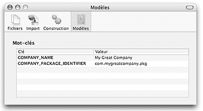

Ce document décrit les préférences de l'application Iceberg et comment les modifier.
Fichiers
Lorsque vous ajoutez un fichier ou un dossierà la hiérarchie des fichiers d'un package, un dialogue vous demande de spécifier :
Si des applications Carbon sont présentes dans la hiérarchie de fichiers du project, il peut s'avérer nécesssaire de devoir séparer leur Data Fork et Resource Fork. Apple fournit un outil nommé SplitForks pour cette tâche. Iceberg fournit un outil nommé goldin. Vous pouvez choisir celui que vous souhaitez utiliser.
Pour conserver ou non le propriétaire et groupe d'un fichier par défaut :
| 1 | Choisissez Iceberg > Préférences… . |
| 2 | Cliquer Fichiers. |
| 3 | Cochez ou décochez l'option Conserver propriétaire et groupe. |
Pour modifier le style de référence par défaut :
| 1 | Choisissez Iceberg > Préférences… . |
| 2 | Cliquer Fichiers. |
| 3 | Sélectionnez le style de référence dans le menu local Style de Référence par défaut. |
Pour afficher ou non le dialogue de personnalisation :
| 1 | Choisissez Iceberg > Préférences… . |
| 2 | Cliquer Fichiers. |
| 3 | Cochez ou décochez l'option Afficher le dialogue de personnalisation. |
Pour changer l'outil de séparation des forks :
| 1 | Choisissez Iceberg > Préférences… . |
| 2 | Cliquer Fichiers. |
| 3 | Sélectionnez l'outil dans la liste de radio boutons. |
Iceberg permet d'importer un composant déjà construit dans un projet. Il est possible de changer le comportement par défaut de l'import avec les deux options suivantes :
Pour activer ou désactiver la copie des composants lors de l'import :
| 1 | Choisissez Iceberg > Préférences… . |
| 2 | Cliquer Import. |
| 3 | Cochez ou décochez la case intitulée Copier les composants lors de l'import. |
Pour activer ou désactiver l'import des composants des metapackages :
| 1 | Choisissez Iceberg > Préférences… . |
| 2 | Cliquer Import. |
| 3 | Cochez ou décochez la case intitulée Importer les composants des metapackages. |
Lors de la construction d'un package, la hiérarchie de fichiers de l'archive est créée dans un dossier temporaire :
le dossier scratch. Par défaut, le dossier scratch est le dossier /tmp. La création de la hiérarchie
pouvant nécessiter beaucoup d'espace disque, vous pouvez souhaiter choisir un autre emplacement pour le dossier scratch, par exemple
sur un volume externe.
Lors du lancement de la construction d'un projet vous pouvez choisir d'enregistrer automatiquement ou non les dossiers modifiés avant que la construction ne démarre réellement. Par défaut, les projets ne sont pas enregistrés.
Lorsque vous construisez un projet, vous pouvez choisir d'afficher automatiquement ou non la fenêtre de l'historique de construction. De même à la fin de la construction, vous pouvez choisir de masquer automatiquement ou non cette fenêtre.
Pour changer l'emplacement du dossier scratch :
| 1 | Choisissez Iceberg > Préférences… . |
| 2 | Cliquer Construction. |
| 3 | Choisissez Choisir… dans le menu local Action du dossier scratch. |
| 4 | Sélectionnez le nouveau dossier scratch et cliquez sur Choisir. |
Pour activer ou désactiver l'enregistrement automatique des projets à la construction :
| 1 | Choisissez Iceberg > Préférences… . |
| 2 | Cliquer Construction. |
| 3 | Choisissew le comportement approprié dans le menu local Projets non enregistrés. |
Pour afficher la fenêtre de l'historique de construction :
| 1 | Choisissez Iceberg > Préférences… . |
| 2 | Cliquer Construction. |
| 3 | Choisissez quand la fenêtre doit être affichée à l'aide du menu local Afficher pendant la construction. |
Pour masquer la fenêtre de l'historique de construction :
| 1 | Choisissez Iceberg > Préférences… . |
| 2 | Cliquer Construction. |
| 3 | Choisissez quand la fenêtre doit être masquée à l'aide du menu local Masquer après la construction. |

La liste des mots-clé des modèles permet de spécifier les valeurs à utiliser pour ces mots-clé lors de la crétion d'un nouveau projet à partir d'un modèle de projet.
Pour changer la valeur d'un mot-clé :
| 1 | Choisissez Iceberg > Préférences… . | ||
| 2 | Cliquez Modèles . | ||
| 3 | Sélectionnez la ligne de la valeur à modifier. | ||
| 4 | Double-cliquez sur la valeur. | ||
| 5 | Saisissez la nouvelle valeur et validez en appuyant sur Return.
|